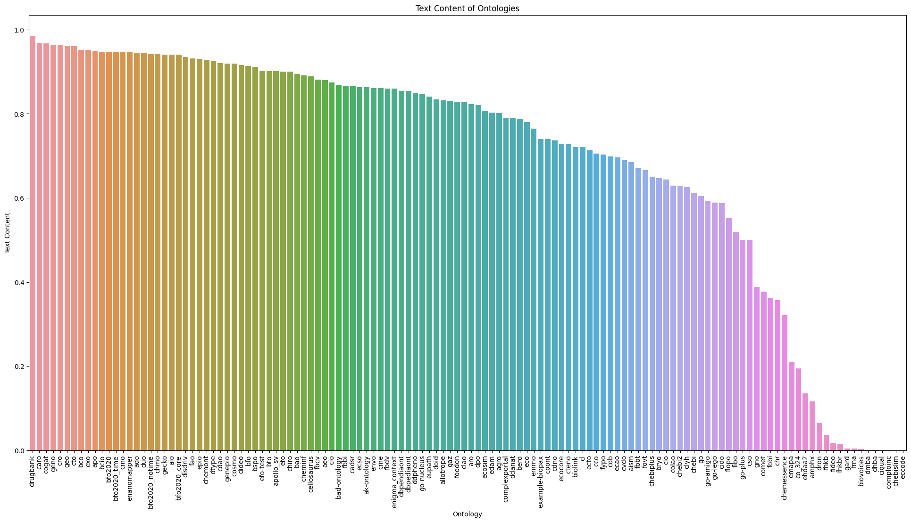

Analyzing Text Content of all Ontologies
[14]:
[1]:
!mkdir -p output
[ ]:
!python -m oaklib.utilities.metrics.text_content_analysis ~/repos/semantic-sql/db/*.db > output/ontologies-tc.tsv
[2]:
import pandas as pd
df = pd.read_csv('output/ontologies-tc.tsv', sep='\t')
df
[2]:
| ontology | text_content | |
|---|---|---|
| 0 | /Users/cjm/repos/semantic-sql/db/aao.db | NaN |
| 1 | /Users/cjm/repos/semantic-sql/db/ado.db | 0.945262 |
| 2 | /Users/cjm/repos/semantic-sql/db/adw.db | NaN |
| 3 | /Users/cjm/repos/semantic-sql/db/aeo.db | 0.879694 |
| 4 | /Users/cjm/repos/semantic-sql/db/aero.db | NaN |
| ... | ... | ... |
| 145 | /Users/cjm/repos/semantic-sql/db/go-lego.db | 0.589013 |
| 146 | /Users/cjm/repos/semantic-sql/db/go-nucleus.db | 0.846068 |
| 147 | /Users/cjm/repos/semantic-sql/db/go-plus.db | 0.500000 |
| 148 | /Users/cjm/repos/semantic-sql/db/go.db | 0.604229 |
| 149 | /Users/cjm/repos/semantic-sql/db/goa_uniprot_a... | NaN |
150 rows × 2 columns
[3]:
# replace ontology column (which is currently file path) with ontology name (stemmed file name)
import os
df['ontology'] = df['ontology'].apply(lambda x: os.path.basename(x).replace('.db',''))
df
[3]:
| ontology | text_content | |
|---|---|---|
| 0 | aao | NaN |
| 1 | ado | 0.945262 |
| 2 | adw | NaN |
| 3 | aeo | 0.879694 |
| 4 | aero | NaN |
| ... | ... | ... |
| 145 | go-lego | 0.589013 |
| 146 | go-nucleus | 0.846068 |
| 147 | go-plus | 0.500000 |
| 148 | go | 0.604229 |
| 149 | goa_uniprot_all | NaN |
150 rows × 2 columns
[6]:
# drop columns with all text_content values as NaN
df = df.dropna()
df
[6]:
| ontology | text_content | |
|---|---|---|
| 1 | ado | 0.945262 |
| 3 | aeo | 0.879694 |
| 5 | agro | 0.801219 |
| 6 | aio | 0.940620 |
| 7 | aism | 0.684825 |
| ... | ... | ... |
| 144 | go-amigo | 0.592075 |
| 145 | go-lego | 0.589013 |
| 146 | go-nucleus | 0.846068 |
| 147 | go-plus | 0.500000 |
| 148 | go | 0.604229 |
126 rows × 2 columns
Plot Results
use matplotlib to plot the results as a bar chart, ordered by the text_content value
[13]:
# use matplotlib to plot df as a bar chart
# x-axis: ontology
# y-axis: text_content
# order by text_content
import matplotlib.pyplot as plt
import seaborn as sns
df = df.sort_values('text_content', ascending=False)
plt.figure(figsize=(24, 12))
sns.barplot(x='ontology', y='text_content', data=df)
plt.xticks(rotation=90)
plt.xlabel('Ontology')
plt.ylabel('Text Content')
plt.title('Text Content of Ontologies')
plt.savefig('output/text_content.png')
plt.savefig('output/text_content.svg')
plt.show()

[ ]: